A log of (some of my) outings. Entries before approx. 2023 not reported.
From Bourg St Pierre, little snow in the east couloir, descended west, and closed the loop through the Refuge du Velan.
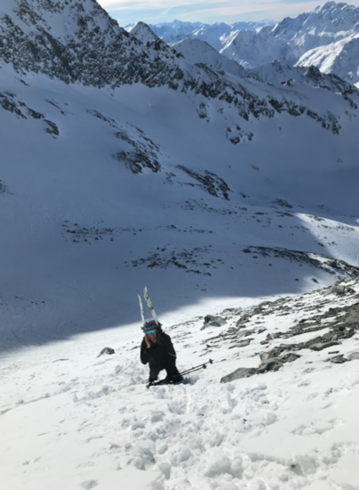
Through the classical itinerary, and then down the colouir near the summit. Good snow.
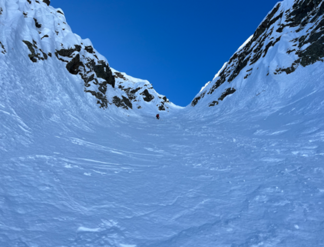
From Bourg St Pierre. Amazing, amazing, amazing!
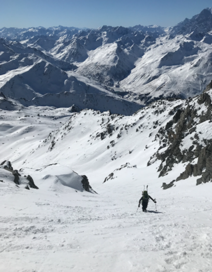
From Buet-Vallorcine.
From north-entrance of GSB tunnel. With Alex! Thanks for the visit!
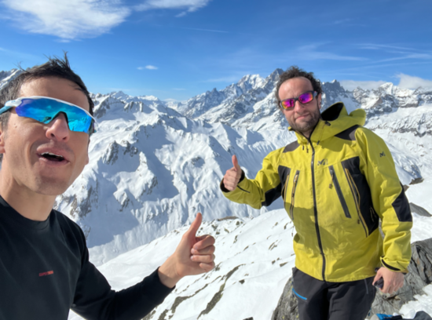
From Trient. With G. and A.
My first time in Diemtigtal. Going to become a classic...!
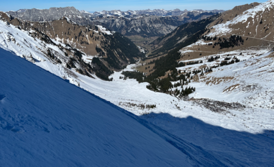
From Simplon pass.
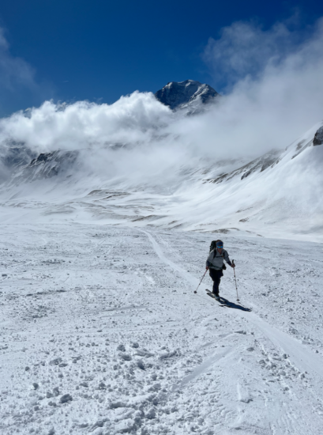
Start of holiday week! From Aiguille du Midi, partial descent on Valle Blanche, up to the summit, and then down. Many people on the way back to chx. (dramatic avalanche on Dome du Miage)
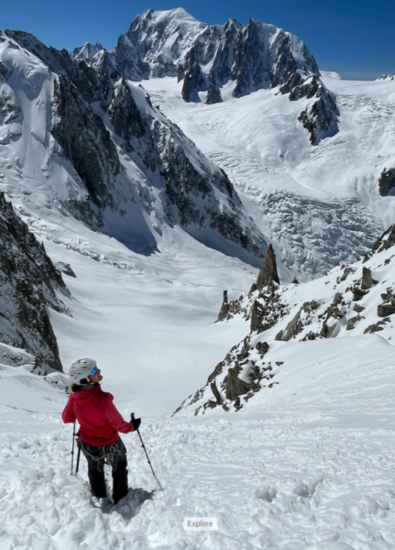
With lift to l'index, Col du Belveder, then down the couloir, and to Buet. Very pretty.
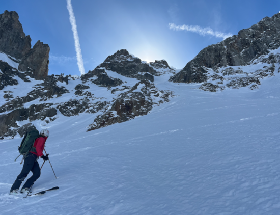
Sun is over in chamonix valley. Going south looking for good weather.
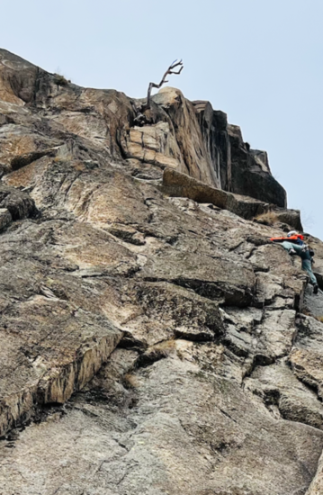
Single-pitches in Mottarone. Not too great, not too bad. Good hike.
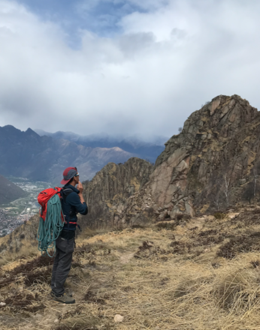
Through the classic itinerary from Sustenpass. I broke my binding. Good conditions otherwise.
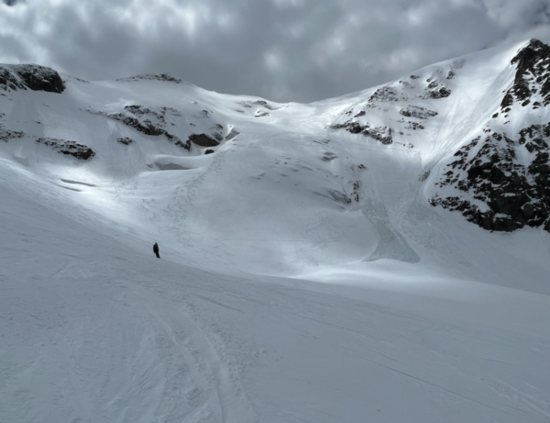
Amazing Wiwannihorn! Walking up from the valley, shelter, and two climbing routes. Still snow on the routes and on the descent.
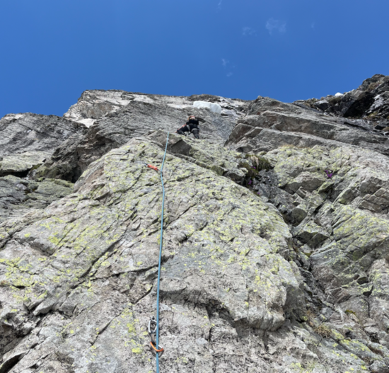
Traversee from Jungfraujoch to Loetschental. That's the end of an excellent ski-touring season!
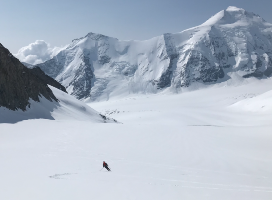
Attempted Bugeleisen; ended up on the wrong route and gave it up at the 3rd pitch.
I cheated on the crux.
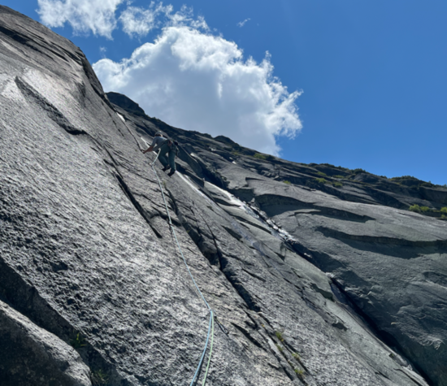
From Baltschiederklause to Bietschhorn Hutte through the summit, in 14 hours. Good conditions. Nice climb on the way up; descend never ends.
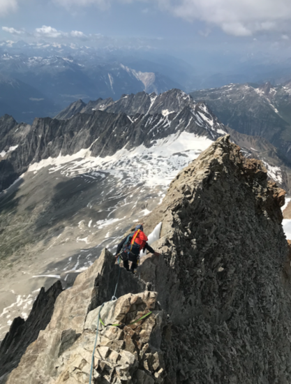
Climbing week in the granite of Val Ferret. Stayed in the busy and moderately dirty winter room of Dalmazzi. Climbed Done La Beresina, Aiguille Rouge de Triolet, Genepi (Parete dei Titani), and one down in the valley.
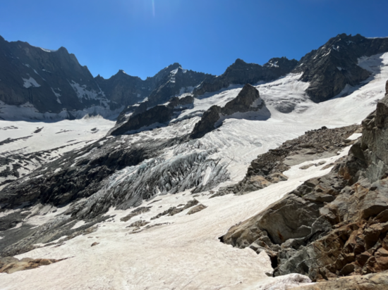
Frustrating weekend in Grimsel Eldorado :D. Climbed the first few pitches of Motorhead before the sunset on the first day. The second day, gave it up at the first pitch (!) of Weisse Dame (?).
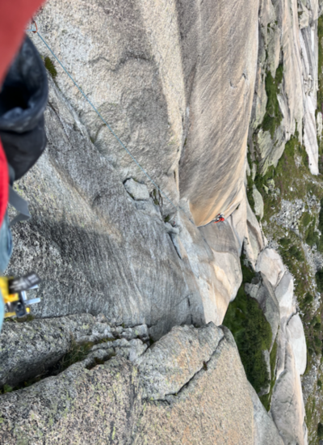
Hannibalturm on the first day. Climbed Evalin to Furkahorn on the second, amazing route.
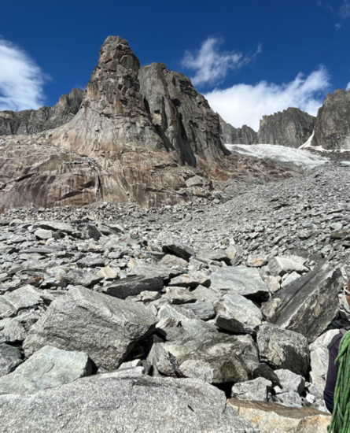
Turistic outing with my parents to see the north face of Eiger, but not everyone has the same taste!
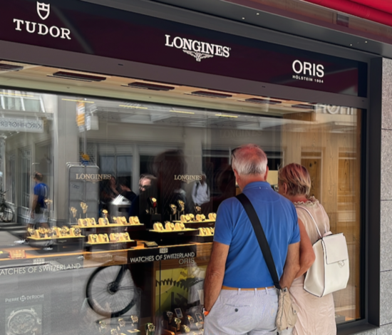
In 3 day, from Naters. Very pretty and in good conditions. Precautionasly, with 2 ice axes for the way down. In the pic, view on Weissmies from the Gredetschental.
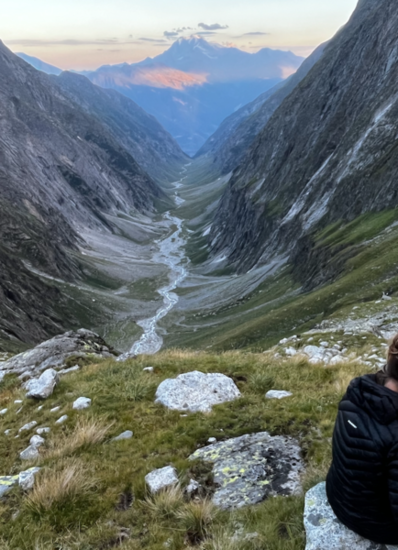
Stayed at Gianetti (Met Cedric in the shelter :D) and Allievi. Climbed Punta Torelli (via Mauri-Fiorelli, cold!) Punta Allievi (Spigolo Gervasutti, tres bien passé!), Spigolo Gervasutti. In the valley, stayed at Lo Scoiattolo. On the way back, climbed Pizzo del Prevat (north-east ridge) da Capanna Leit. Very pretty.
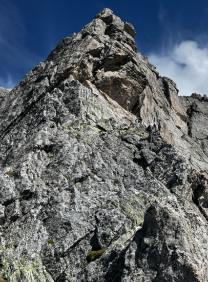
Visited Giovanni and Elisa in Brusson and used the chance to climb the south ridge of Castore (this route). Nice, but a bit sketchy sometimes. Down from the normal way. Sleeped in the winter room of Rifugio Sella.
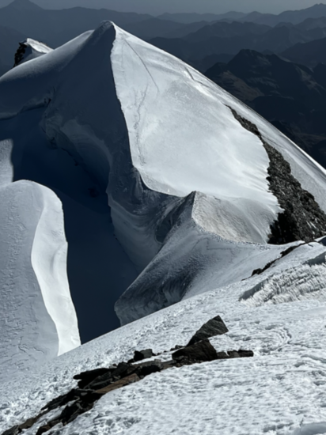
Definetely to be repeated.
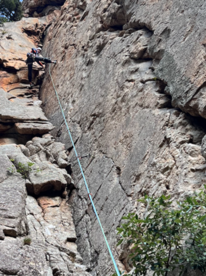